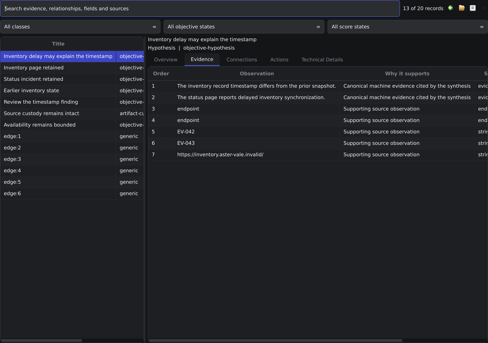
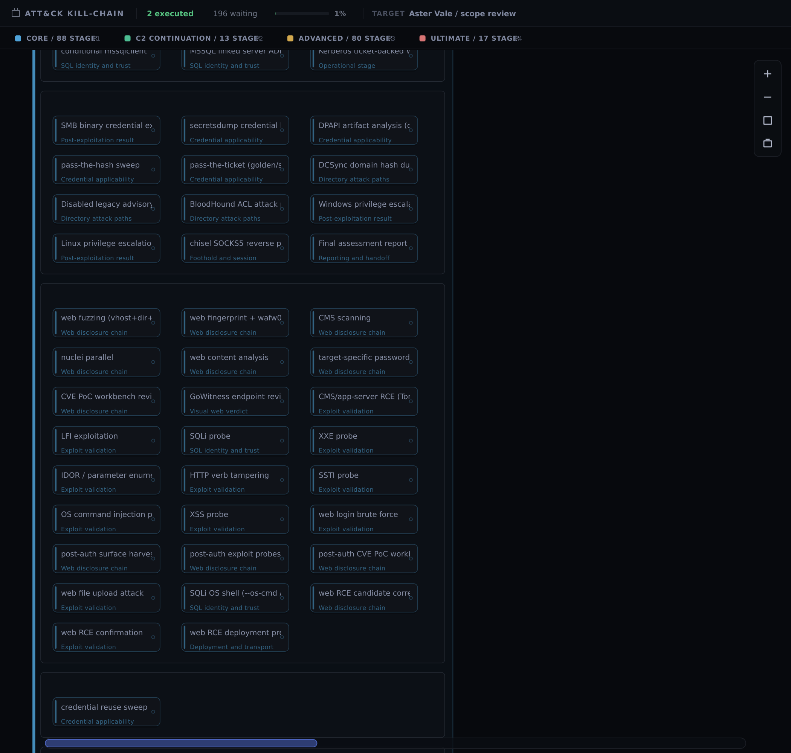

RedShades / Software carries the workflowTECHNICAL EDITION
Platform scope
Put models to work.
Keep software in control.
Long technical investigations ask more of a system than a good answer. RedShades gives smaller, specialized models defined decisions while deterministic software owns scheduling, evidence, policy and recovery. A native workspace brings those decisions, their sources and the tools behind them into view.
Keep source notes, context and investigation progress together.
The investment thesis is integration: useful work can accumulate across model sessions, tool changes and runtime replacement. The architecture supports that thesis; comparative model cost and reliability still require controlled measurement.
RedShades / Software carries the workflowTECHNICAL EDITION
Evidence-driven scheduling
The next step is a software decision
Each stage declares the evidence it needs. The scheduler advances eligible branches and revisits waiting work when observations change. Models interpret uncertain inputs; they do not have to reconstruct the workflow or remember which branch can run.
Evidence-driven scheduling · overview.
The Executive supervises progress. Capability development and software repair have separate owners, so a stalled investigation can be routed to the appropriate kind of work. Child investigations retain their scope, parent context and completion relationship.
RedShades / Software carries the workflowTECHNICAL EDITION
Model allocation
Spend intelligence on the uncertain part
Scheduling, state, policy and validation are software responsibilities. Interpretation and synthesis are model responsibilities. That division gives a small specialist a complete, bounded job instead of asking it to manage an entire engagement.
Model allocation · overview.
The 70% deterministic / 30% neural framing describes the design philosophy. It is not a measured share of code, runtime or success. Model economics remain a question for controlled evaluation.
Versioned records link observations, identities, routes, artifacts and outcomes. A new model session or replacement worker can read the accepted state and its sources without rebuilding the investigation from a conversation.
Shared engagement state · overview.
The scheduler and native views draw on the same records. Revision references identify the inputs behind a decision; they also make stale results distinguishable from current work.
A tool result retains its source, context and interpretation. Later stages can reuse it, and an operator can inspect what actually supported a conclusion. Competing observations remain distinguishable until there is evidence to resolve them.

Inspect the source records supporting the selected finding.
Attribution is the connection between tool integration and model quality: a specialist receives inspectable material with context, rather than an untraceable summary.
The Validated Core contains 88 conditional stages spanning discovery, service and identity analysis, web investigation, artifacts and reporting. Thirteen C2 continuation stages add shared and platform-specific session work.

Web investigation within the 198-stage repertoire.
Prerequisites, platform context and policy determine the path. The atlas identifies the available responsibilities; its order does not prescribe an execution sequence.
An endpoint review or missing identity fact can hold one branch while unrelated work continues. A global pause is an explicit operator decision with a different scope.
Branch-local progress · overview.
Waiting work retains the input that could make it eligible. New observations can reopen useful branches without turning every unresolved item into a retry loop.
RedShades / Give each model the right jobTECHNICAL EDITION
Bounded model calls
A complete job for a specialist
Core includes 100 fine-tuned specialist adapters for bounded stateless calls and code-review roles. Each call receives a defined purpose and structured evidence. Software validates its response and retains the accepted result with model attribution.
Bounded model calls · overview.
Capacity, token accounting and response limits surround the call. The task boundary selects the specialist; the engagement keeps the evidence and review history.
RedShades / Give each model the right jobTECHNICAL EDITION
Persistent model sessions
Harder work needs a persistent workspace
The fine-tuned 30B3A Flash model supports persistent higher-complexity sessions. Executive, capability-development and repair workspaces carry accepted artifacts, prior review and progress between segments.
Persistent model sessions · overview.
Access to fine-tuned models and specialist adapters follows controlled subscription gates. Weekly model credits and selective weights entitlements support different deployment needs; the bundle comparison sets out those terms.
RedShades / Give each model the right jobTECHNICAL EDITION
Capability development
Build the missing interaction against a contract
The Adaptive Capability Pipeline (ACP) is an adaptive capability-generation harness. It develops candidates from observed evidence and source mechanics, retaining the contract through binding, SDK selection, adapter generation, review and replica validation.
Capability development · overview.
A compatible catalog artifact or SDK can remove unnecessary generation work. New candidates retain their correction history and supporting artifacts for review.
RedShades / Give each model the right jobTECHNICAL EDITION
Candidate publication
Generated code needs an admission boundary
Source findings and advisories can inform a typed capability candidate. Source, metadata and tests are published together with their digests, giving review a specific artifact set to examine.
Candidate publication · overview.
The workbench can retain a candidate for controlled evaluation when a ready-made implementation is absent. Publication establishes artifact identity; admission determines whether it can be used.
RedShades / Give each model the right jobTECHNICAL EDITION
Independent capability review
Test what happens when the names change
An isolated reviewer checks a candidate against its contract and provenance. Counterfactual cases change names, ordering, missing evidence and competing candidates to assess whether the behavior generalizes.
Independent capability review · overview.
The reviewer receives a read-only packet and returns a typed verdict. Generation, review and execution permission remain separately owned.
RedShades / Give each model the right jobTECHNICAL EDITION
Runtime software repair
Repair has to end with a working hand-back
The Autonomic Engineering Plane (AEP) is an adaptive software-repair harness. It owns diagnosis, a persistent repair session, scoped changes, tests, build admission and hot replacement, ending with verified hand-back to the run.
Runtime software repair · overview.
A missing interaction belongs to capability development; a defect in supported platform behavior belongs to software repair. The repair loop is assessed as a complete transaction, beyond the existence of a patch.
RedShades / Continuity is an engineering problemTECHNICAL EDITION
Provider replacement
Replace the worker. Retain the record.
Versioned providers give runtime replacement a defined boundary. New work can adopt a replacement while existing work retains its implementation and the engagement state stays outside the provider.
Provider replacement · overview.
The Runtime Composition Kernel owns publication, leases, rollback and cleanup. This supplies the lifecycle foundation for repair without requiring the investigation record to move with the code.
RedShades / Continuity is an engineering problemTECHNICAL EDITION
Worker result attribution
Old work cannot silently become current
Isolated workers receive immutable execution envelopes. Acceptance checks the artifact, input and generation lease, so an expired worker cannot publish a plausible result into the current run.
Worker result attribution · overview.
In-process handlers and isolated workers have different replacement boundaries. A lease identifies the implementation responsible for a result. Process ownership, bounded output, cleanup handles and token accounting make resource use inspectable.
RedShades / Continuity is an engineering problemTECHNICAL EDITION
Workspace integration
Keep specialist tools in their native setting
The Qt workspace combines dense investigation views with retained tool surfaces. Gitea, BloodHound, build workflows, RDP and development harnesses can sit alongside the operator environment.
Workspace integration · overview.
Lightweight QML chrome surrounds native widgets. Embedded windows preserve specialist interfaces while the investigation remains visible. Binary and source analysis remain beside the workbench; their results return to the same investigation record.
RedShades / Continuity is an engineering problemTECHNICAL EDITION
Third-party execution
Integration begins after the tool runs
Network, web, directory, browser and source-inspection tools produce different kinds of output. Their value to the platform comes from controlled execution and the attributed evidence returned to the engagement.
Third-party execution · overview.
Admitted third-party proof-of-concept work can use isolated containers. Tool availability, candidate review and execution permission remain separate inputs.
RedShades / Continuity is an engineering problemTECHNICAL EDITION
Artifact identity
Built bytes need a traceable identity
Versioned builds, transformation and obfuscation components form the artifact toolchain. VM-oriented transformation sits within that engineering scope; digests and provenance connect the resulting material to its recorded role.
Compare versioned artifacts and their build states.
Native artifact views expose the inventory to the operator. A build record identifies material and purpose without implying that the artifact was deployed or a session established.
RedShades / Continuity is an engineering problemTECHNICAL EDITION
Session continuation
A session adds context to the same investigation
Registered sessions make platform-aware continuation available. Common, Windows and Linux stage families retain their prerequisites while artifacts and attached work remain linked to the parent engagement.
Session continuation · overview.
The 13 C2 continuation declarations complement the 88 Core stages. Session context selects applicable work.
RedShades / A workspace for close inspectionTECHNICAL EDITION
Network Graph
See where an observation belongs
Network Graph places observed hosts and relationships in the wider investigation. Selecting a host or link connects that overview to its available context.
Locate each host and its observed relationships in the wider investigation.
A displayed relationship aids orientation. Its presence does not establish an admitted route or a verified capability.
RedShades / A workspace for close inspectionTECHNICAL EDITION
WebRecon overview
Read the source without losing the overview
WebRecon places web observations, source detail and endpoint review in one native surface. The operator can inspect a selected item while retaining the surrounding investigation.
Follow web observations from the page to the evidence record.
Source material stays near the observation it supports, with selected evidence and review context available together.
RedShades / A workspace for close inspectionTECHNICAL EDITION
WebRecon review and gate state
Make the pending decision specific
A review state identifies the affected endpoint or branch and its supporting evidence. The operator can see what is waiting and where the decision applies.
See the endpoint, scope and evidence behind a pending review.
A displayed gate communicates scope. Enforcement is established by policy and lifecycle validation, beyond the screenshot.
RedShades / A workspace for close inspectionTECHNICAL EDITION
Investigation Graph
Trace a hypothesis to its observations
Investigation Graph arranges evidence and interpretations as relationships. Detail views retain the source references needed to examine a hypothesis.
Trace each conclusion through support, counter-evidence and review.
The graph offers an overview while the workbench carries fuller records. Observations remain distinct from their interpretation.
RedShades / A workspace for close inspectionTECHNICAL EDITION
Investigation Workbench
Give difficult evidence room
The Investigation Workbench provides a dedicated surface for source references, context and available continuation. Selection exposes detail without forcing every field into a graph node.
Compare canonical records and the sources behind the current revision.
Review source references, competing observations and the current revision together. Open the image to inspect the record in detail.
RedShades / A workspace for close inspectionTECHNICAL EDITION
Session and artifact surfaces
Distinguish a record from availability
Session and artifact views place stored records, versioned builds and observed availability together. Offline and unknown states remain visible alongside selected detail.
Review host identity and recorded availability before continuing work.
Host identity, recorded state and artifact history help an operator distinguish stored records from current availability.
RedShades / A workspace for close inspectionTECHNICAL EDITION
Model and runtime controls
Configuration within reach of the work
Model and runtime controls remain accessible alongside the investigation. They expose the choices an operator needs to review without leaving the native workspace.
Review model selection and bounded provider settings.
Configuration expresses the selected policy. Runtime admission, attribution and accounting establish how that policy is applied.
RedShades / What the evidence supportsTECHNICAL EDITION
Verification coverage
Match the claim to the check
Focused contracts, integrated simulations, race checks, repetition, fuzzing and fault injection examine different failure modes. The Mega and Ultra acceptance suites organize that work.
Verification coverage · overview.
Revision-bound receipts connect checks to commands and outputs. A component result supports its tested boundary; whole-system reliability needs integrated evidence.
RedShades / What the evidence supportsTECHNICAL EDITION
Disclosure study
A vocabulary that can be tested on new material
The Trigger Methodology Graph study grouped 200 public disclosures into 37 recurring families. Of 40 identity-disjoint held-out disclosures, 39 belonged to a represented family.
Disclosure study · overview.
This measures family coverage in a curated study. It does not count discoveries made by the product. Synthetic calibration recorded 600 activations; no candidates were live-exercised or admitted in the reported study.
RedShades / What the evidence supportsTECHNICAL EDITION
Evidence-gap analysis
A useful hypothesis names the missing fact
Trigger Methodology Graph produces evidence-bound hypotheses. Shadow Capability Graph examines missing prerequisites from an immutable snapshot. Policy gates retain review over proposed hypotheses.
Evidence-gap analysis · overview.
The result identifies uncertainty and the evidence needed to resolve it. A diagnostic suggestion does not acquire scheduling authority.
RedShades / What the evidence supportsTECHNICAL EDITION
CTF validation
An evaluation history across more than 691 CTF labs
Validation spans more than 691 CTF labs. The learning curve averaged about 90% after lab 328 and rose steadily toward 97%.
CTF validation · overview.
Successive evaluations connect model learning with the practical demands of sustained technical work. The history complements the platform’s component, integration and fault-testing program.
Each entry identifies available work and its evidence context. Separate C2 families extend session work.
web fingerprint + wafw00f Validated Core
web_whatweb_waf
Web investigation · Web observations and scoped review → Web evidence
web fuzzing (vhost+dir+ext) Validated Core
web_fuzz
Web investigation · Web observations and scoped review → Web evidence
web login brute force Validated Core
web_login_bruteforce
Web investigation · Web observations and scoped review → Web evidence
web RCE candidate correlation Validated Core
web_rce_candidate_correlation
Web investigation · Web observations and scoped review → Web evidence
web RCE confirmation Validated Core
web_rce_confirm
Web investigation · Web observations and scoped review → Web evidence
web RCE deployment preparation Validated Core
web_rce_deployment_prepare
Web investigation · Web observations and scoped review → Web evidence
XSS probe Validated Core
web_xss_probe
Web investigation · Web observations and scoped review → Web evidence
XXE probe Validated Core
web_xxe_probe
Web investigation · Web observations and scoped review → Web evidence
Results return to the evidence-driven scheduler. Stage declarations describe available work, not a mandatory linear sequence.
RedShades / C2 continuationTECHNICAL EDITION
13 continuation stages
Session work follows platform-specific branches
Registered session context selects Windows, Linux and shared continuation work. These 13 stages complement the 88-stage Validated Core and are included in the 198-stage catalog.
48 descriptors: 37 potential third-party packages, one external Apple toolchain and ten native or custom components. Domain totals overlap through reuse.
97 expansion stages: 80 Advanced (78 domain stages and two shared helpers) and 17 Ultimate. Licensing and validation apply to each integration. The 48 entries include 47 stage-referenced components and one foundational router.
48 descriptors: 37 potential third-party packages, one external Apple toolchain and ten native or custom components. Domain totals overlap through reuse.
The two shared helpers normalize cross-domain evidence and correlate observations into a converged assessment record.
97 expansion stages: 80 Advanced (78 domain stages and two shared helpers) and 17 Ultimate. Licensing and validation apply to each integration. The 48 entries include 47 stage-referenced components and one foundational router.
RedShades / BundlesTECHNICAL EDITION
Under testing
Specialist application domains
Android / mobile
8 stages
Under testing
Package metadata, permissions and storage observations give application review a concrete starting point. Device and transport evidence determine the applicable analysis.
Assessment scope
Mobile configuration, application metadata and transport review
Shared tool architecture
10 referenced entries · Androguard, Apktool, Android bundletool, Cosign, JADX, Mobile Security Framework. Native evidence and reporting components complete the cluster.
Apple platforms
8 stages
Under testing
Signing and entitlements connect application behavior to platform permissions. iOS, iPhone and macOS evidence also supports privacy and configuration review.
Assessment scope
Signing, entitlements, privacy settings and platform configuration
Shared tool architecture
8 referenced entries · ipsw, LLVM binary utilities, Apple codesign/security toolchain. Native evidence and reporting components complete the cluster.
Blockchain
8 stages
Under testing
Contract and transaction records support access-control, dependency and governance review. Provenance keeps each conclusion connected to the relevant artifact.
Assessment scope
Contract metadata, access controls and transaction provenance
Shared tool architecture
8 referenced entries · Cosign, Echidna, Foundry, Slither, Solidity compiler. Native evidence and reporting components complete the cluster.
Captured advertisements, pairing observations and NFC records preserve the distinctions between protocols and device classes.
Assessment scope
Advertisement, pairing and NFC record analysis
Shared tool architecture
8 referenced entries · BlueZ btmon, libnfc utilities, Wireshark/TShark, Zeek. Native evidence and reporting components complete the cluster.
Wi-Fi / RF
8 stages
Under testing
Recorded traffic and wireless configuration support network, radio and authentication review. Spectrum records add context where the evidence provides it.
Assessment scope
Wireless posture, spectrum records and authentication configuration
Shared tool architecture
9 referenced entries · GNU Radio, Suricata, Wireshark/TShark, Zeek. Native evidence and reporting components complete the cluster.
LLM / AI systems
8 stages
Under testing
Evaluation artifacts connect model behavior to application permissions and data handling. Model, data and application boundaries receive separate attention.
Assessment scope
Evaluation artifacts, data handling and permission boundaries
Shared tool architecture
10 referenced entries · garak, Inspect AI, OSV-Scanner, Syft, Trivy. Native evidence and reporting components complete the cluster.
Firmware images and component inventories support metadata, provenance and secure-boot review. Image, component and boot-policy evidence remain distinguishable.
Assessment scope
Firmware metadata, component provenance and secure-boot posture
Asset and finding intake opens parallel exposure, dependency and remediation analysis. A change plan brings the branches together with rollback criteria, canary observations and approval requirements.
The workflow assembles a reviewed proposal and defines the evidence required to validate a future change.
Digital forensics
9 stages · Under development
Case intake establishes evidence identity and custody. Artifact, timeline and correlation branches preserve source attribution and converge into a reviewable case record.
Case intake → evidence preservation → analysis branches → correlation → review → case report
Integrity checks precede analysis. Incomplete or conflicting observations remain visible in the final evidence account.
Each annual seat brings the native workspace, integrated tool workflows and controlled model access together. Select the assessment scope and deployment entitlement that fit the work.
Core
Starting at$7,000/ year per seat
88 Core stages + 13 C2 continuation stages
Validated Core
100 fine-tuned specialist adapters for bounded stateless calls and code-review roles. Gated 30B3A Flash access includes 50,000 credits per week throughout the active annual subscription.
Advanced
Starting at$14,000/ year per seat
Core stage scope + 80 Advanced stages
Under testing
Fine-tuned 30B3A Flash model weights included under NDA for persistent higher-complexity sessions. The weights entitlement gives qualified deployments direct access to the model asset.
Ultimate
Starting at$20,000/ year per seat
Core and Advanced stage scope + 17 defensive and forensic stages
Under development
50,000 credits per week throughout the active annual subscription. The proprietary multi-encoder suite adds task-specific embedding and representation variants for defensive and forensic work; it is not an LLM. An optional additional $5,000 weights entitlement under NDA supports intensive parallel and large-network deployments.
Fine-tuned model and adapter access is controlled by subscription gates. Weights access is a separate, selective entitlement under NDA. Active subscriptions receive applicable weights and stage updates at least every six months.


{kind=link}